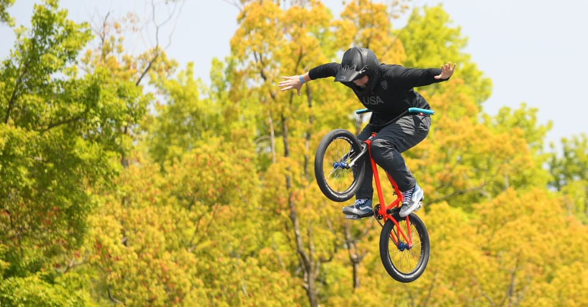

Forest's Home Page

Bmx riding
I really like to ride BMX,I mean a lot.Am I the best at it not really can I do some cool things;now that is a yes.I've been riding BMX since I was around 12 years old I really got into it at 13.At 13 I learned how to get it off the ground which opened the game. Since then I have been able to do a barspin. I've also done flips although those weren't on purpose.
Cooking
After a long day of BMXing you are so increadily hungry.So I picked up cooking. I've really been cooking just as long as I've been BMXing. I've making a delicous lamb and pork andanythig you can think of. If you ask anyone who knows me they will tell you I can make a mean bread which goes perfect with a nice juicy burger. I'm so good at cooking I've worked kitchen in two resturants, and have taken over the grill at the family cookouts.
Place
Movie